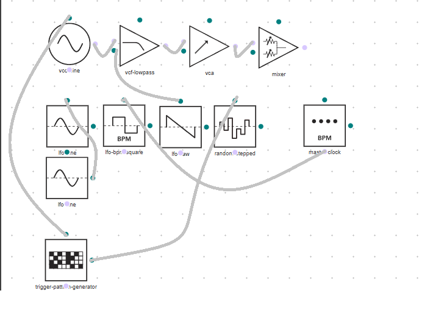

I created a simple synthesizer patch using straightforward signal routing and controlled randomness to generate variation while staying synchronized to a master clock. The interaction between simple structure and randomness creates a balance between chaos and calmness, allowing the sound to continuously evolve without losing its sense of rhythm. b I generally prefer to keep my technical approach simple while exploring ways to create complex and rich sounds.
